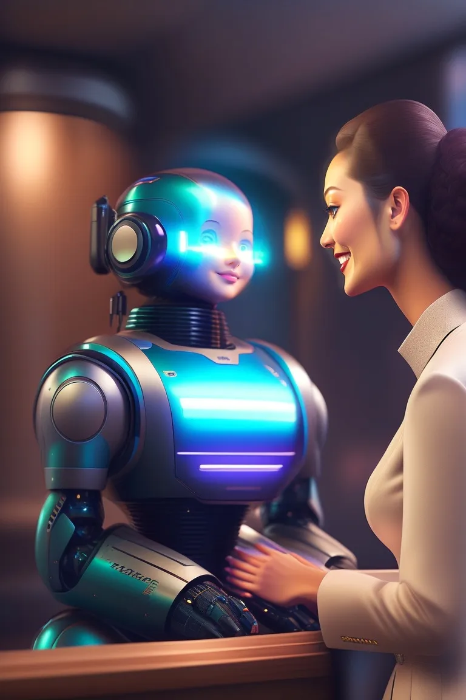
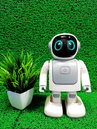

Robots are machines designed to perform a wide variety of tasks, often mimicking human actions or making processes more efficient. They come in many forms, from simple, single-task devices like robotic arms in manufacturing to sophisticated, humanoid robots capable of interacting with people. Robots are commonly powered by electricity, hydraulics, or pneumatics and are controlled by computers or microcontrollers. Advances in artificial intelligence (AI) have allowed robots to become more autonomous, learning from their surroundings and making decisions based on data. This has opened up new possibilities in industries like healthcare, agriculture, and space exploration, where robots can perform tasks that are dangerous, repetitive, or impossible for humans to accomplish.
In addition to industrial uses, robots are increasingly being integrated into everyday life. Household robots, such as robotic vacuum cleaners and lawn mowers, help people with domestic chores, while social robots are being developed to provide companionship and assistance to elderly individuals. Robots are also becoming valuable tools in education, where they are used to teach programming, problem-solving, and STEM skills. As robotics technology continues to evolve, ethical and social implications arise, such as job displacement, privacy concerns, and the potential for over-reliance on automation. However, with responsible development, robots have the potential to enhance human capabilities and contribute to a more efficient and connected world.
 